CODING AGENTS AS PIXEL WORLD MODELS
traex/DeepSeek-V4.1-Flash · 0162
点击播放 · 原生 RGB 像素
逐轮保存的候选
回放视频、检查图与代码变化。
每份候选均可单独播放。实际图片检查记录在下方工具轨迹中。
候选 01播放与检查图
点击播放 · 原生 RGB 像素

展开代码变化
--- 上一保存版本
+++ 本次保存版本
@@ -0,0 +1,222 @@
+from pathlib import Path
+
+import cv2
+import numpy as np
+from PIL import Image, ImageDraw, ImageFilter
+
+import artifact_io
+
+
+CASE_DIR = Path(__file__).resolve().parent
+WIDTH, HEIGHT, FRAME_COUNT, FPS = 256, 144, 20, 4
+
+# The five balls use a slight perspective diagonal, matching the source frame.
+REST_X = np.array([83.0, 96.0, 109.0, 121.5, 134.0], dtype=np.float64)
+REST_Y = np.array([93.0, 94.3, 95.8, 97.5, 99.0], dtype=np.float64)
+PIVOT_Y = np.array([7.5, 8.7, 10.0, 11.2, 12.5], dtype=np.float64)
+LENGTH = REST_Y - PIVOT_Y
+BALL_RADIUS = 5.45
+INITIAL_ANGLE = np.deg2rad(-17.5)
+
+
+def build_background(image):
+ """Remove the original spheres and their fine suspension lines."""
+ mask = np.zeros((HEIGHT, WIDTH), dtype=np.uint8)
+
+ initial_centers = [(61.2, 88.5)]
+ initial_centers.extend(zip(REST_X, REST_Y))
+ for cx, cy in initial_centers:
+ cv2.ellipse(
+ mask,
+ (round(cx), round(cy)),
+ (7, 7),
+ 0,
+ 0,
+ 360,
+ 255,
+ -1,
+ )
+
+ # Two strings support each ball. They are thin in the source but are
+ # widened slightly here so no stale lines remain behind the animation.
+ for cx, rest_y in initial_centers:
+ top_y = PIVOT_Y[0] + (cx - REST_X[0]) * 0.095
+ cv2.line(
+ mask,
+ (round(cx - 4.0), round(rest_y - 4.5)),
+ (round(cx - 5.0), round(top_y + 1.0)),
+ 255,
+ 2,
+ cv2.LINE_AA,
+ )
+ cv2.line(
+ mask,
+ (round(cx + 4.0), round(rest_y - 4.5)),
+ (round(cx + 5.0), round(top_y + 1.0)),
+ 255,
+ 2,
+ cv2.LINE_AA,
+ )
+
+ return cv2.inpaint(image, mask, 5, cv2.INPAINT_TELEA)
+
+
+def ball_sprite(radius=8.5, scale=10):
+ """Pre-render a small chrome sphere with a soft alpha edge."""
+ size = int(np.ceil(radius * 2.0 * scale))
+ yy, xx = np.mgrid[:size, :size]
+ cx = cy = (size - 1) * 0.5
+ dx = (xx - cx) / (radius * scale)
+ dy = (yy - cy) / (radius * scale)
+ rr = np.sqrt(dx * dx + dy * dy)
+ inside = rr <= 1.0
+
+ nz = np.sqrt(np.clip(1.0 - rr * rr, 0.0, 1.0))
+ # Broad cool metal body, brighter toward the lower-right reflected table.
+ light = np.clip(0.31 + 0.27 * (-dx) + 0.19 * dy + 0.28 * nz, 0.0, 1.0)
+ rim = np.clip((rr - 0.60) / 0.40, 0.0, 1.0)
+ table_reflection = np.clip(dy * 0.65 + dx * 0.25, 0.0, 1.0) * rim
+ tone = 58.0 + 83.0 * light + 52.0 * table_reflection
+
+ rgb = np.empty((size, size, 3), dtype=np.float32)
+ rgb[..., 0] = tone * 0.94
+ rgb[..., 1] = tone * 0.98
+ rgb[..., 2] = tone
+
+ # Tight window reflection and a smaller soft glint.
+ for hx, hy, sx, sy, amp in [
+ (0.33, 0.28, 0.14, 0.22, 118.0),
+ (-0.20, -0.34, 0.24, 0.18, 42.0),
+ (0.46, 0.35, 0.08, 0.09, 72.0),
+ ]:
+ glow = np.exp(-((dx - hx) ** 2 / (2 * sx * sx) + (dy - hy) ** 2 / (2 * sy * sy)))
+ rgb += (glow * amp)[..., None]
+
+ # Darker contact arc on the upper-left, then a clean antialiased edge.
+ dark = np.clip((-dx * 0.52 - dy * 0.22) - 0.08, 0.0, 1.0)
+ rgb *= (1.0 - 0.20 * dark)[..., None]
+ alpha = np.clip((1.02 - rr) * radius * scale * 0.85, 0.0, 1.0)
+ alpha[~inside] = 0.0
+ rgba = np.dstack((np.clip(rgb, 0, 255), alpha * 255.0)).astype(np.uint8)
+ sprite = Image.fromarray(rgba, "RGBA").resize(
+ (int(round(radius * 2.0)), int(round(radius * 2.0))),
+ Image.Resampling.LANCZOS,
+ )
+ return sprite
+
+
+def simulate():
+ """Equal-mass pendulum chain with sequential elastic collisions."""
+ dt = 0.0005
+ steps = int(round((FRAME_COUNT / FPS) / dt)) + 2
+ theta = np.zeros(5, dtype=np.float64)
+ omega = np.zeros(5, dtype=np.float64)
+ theta[0] = INITIAL_ANGLE
+
+ sample_indices = {
+ int(round(frame / FPS / dt)): frame for frame in range(FRAME_COUNT)
+ }
+ states = np.zeros((FRAME_COUNT, 5), dtype=np.float64)
+ states[0] = theta
+ gravity = 245.0
+ damping = 0.055
+
+ for step in range(1, steps):
+ alpha = -(gravity / LENGTH) * np.sin(theta) - damping * omega
+ omega += alpha * dt
+ theta += omega * dt
+
+ x = REST_X + LENGTH * np.sin(theta)
+ for i in range(4):
+ gap = x[i + 1] - x[i]
+ if gap < 2.0 * BALL_RADIUS - 0.02:
+ vx_i = LENGTH[i] * np.cos(theta[i]) * omega[i]
+ vx_j = LENGTH[i + 1] * np.cos(theta[i + 1]) * omega[i + 1]
+ if vx_i > vx_j:
+ # A lightly inelastic Newton's-cradle collision.
+ mean_v = 0.5 * (vx_i + vx_j)
+ separation = 0.015 * (mean_v - vx_i)
+ vx_i, vx_j = mean_v + separation, mean_v - separation
+ omega[i] = vx_i / (LENGTH[i] * np.cos(theta[i]))
+ omega[i + 1] = vx_j / (
+ LENGTH[i + 1] * np.cos(theta[i + 1])
+ )
+
+ if step in sample_indices:
+ states[sample_indices[step]] = theta
+
+ return states
+
+
+def add_soft_shadow(frame, x, y, strength):
+ """Small contact shadow cast onto the black base."""
+ layer = Image.new("RGBA", (WIDTH, HEIGHT), (0, 0, 0, 0))
+ draw = ImageDraw.Draw(layer)
+ left = int(round(x - 7))
+ top = int(round(y + 1.5))
+ right = int(round(x + 7))
+ bottom = int(round(y + 6.5))
+ draw.ellipse((left, top, right, bottom), fill=(4, 5, 5, int(95 * strength)))
+ layer = layer.filter(ImageFilter.GaussianBlur(1.25))
+ return Image.alpha_composite(frame.convert("RGBA"), layer).convert("RGB")
+
+
+def draw_strings(image, centers):
+ layer = Image.new("RGBA", (WIDTH, HEIGHT), (0, 0, 0, 0))
+ draw = ImageDraw.Draw(layer)
+ for i, ((cx, cy), px) in enumerate(zip(centers, REST_X)):
+ py = PIVOT_Y[i]
+ top_y = int(round(py + 1.0))
+ # The two suspension lines are visible only as delicate pale filaments.
+ for offset in (-4.0, 4.0):
+ draw.line(
+ (int(round(cx + offset)), int(round(cy - 4.3)), int(round(px + offset)), top_y),
+ fill=(225, 218, 202, 88),
+ width=1,
+ )
+ return Image.alpha_composite(image.convert("RGBA"), layer).convert("RGB")
+
+
+def main():
+ source_bgr = cv2.imread(str(CASE_DIR / "first_frame.png"), cv2.IMREAD_COLOR)
+ assert source_bgr is not None
+ source = cv2.cvtColor(source_bgr, cv2.COLOR_BGR2RGB)
+ background = build_background(source_bgr)
+ background_rgb = cv2.cvtColor(background, cv2.COLOR_BGR2RGB)
+ clean = Image.fromarray(background_rgb)
+ sprite = ball_sprite()
+
+ states = simulate()
+ frames = []
+ for frame_index in range(FRAME_COUNT):
+ if frame_index == 0:
+ frames.append(source.copy())
+ continue
+
+ theta = states[frame_index]
+ centers = np.column_stack(
+ (REST_X + LENGTH * np.sin(theta), PIVOT_Y + LENGTH * np.cos(theta))
+ )
+
+ image = clean.copy()
+ for i, ((cx, cy), px) in enumerate(zip(centers, REST_X)):
+ # Keep shadows fixed and subtle for balls at the resting line.
+ motion = abs(cx - px) / max(1.0, LENGTH[i] * abs(np.sin(INITIAL_ANGLE)))
+ image = add_soft_shadow(image, cx, cy, 0.48 + 0.35 * min(1.0, motion))
+
+ image = draw_strings(image, centers)
+
+ # Paint back-to-front. The source light comes from the upper right, so
+ # each chrome rim stays bright and the left edge remains dark.
+ for cx, cy in centers:
+ left = int(round(cx - sprite.width / 2))
+ top = int(round(cy - sprite.height / 2))
+ image.paste(sprite, (left, top), sprite)
+
+ frames.append(np.asarray(image, dtype=np.uint8))
+
+ artifact_io.save(np.stack(frames), CASE_DIR)
+
+
+if __name__ == "__main__":
+ main()
候选 02播放与检查图
点击播放 · 原生 RGB 像素

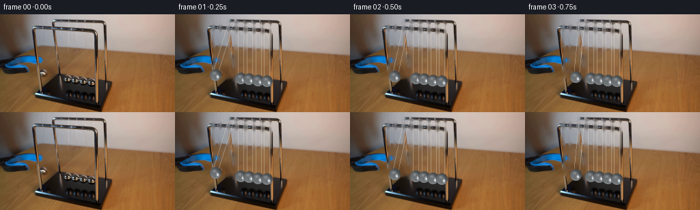
展开代码变化
--- 上一保存版本
+++ 本次保存版本
@@ -16,7 +16,7 @@
PIVOT_Y = np.array([7.5, 8.7, 10.0, 11.2, 12.5], dtype=np.float64)
LENGTH = REST_Y - PIVOT_Y
BALL_RADIUS = 5.45
-INITIAL_ANGLE = np.deg2rad(-17.5)
+INITIAL_ANGLE = np.arcsin((61.4 - REST_X[0]) / LENGTH[0])
def build_background(image):
@@ -61,48 +61,24 @@
return cv2.inpaint(image, mask, 5, cv2.INPAINT_TELEA)
-def ball_sprite(radius=8.5, scale=10):
- """Pre-render a small chrome sphere with a soft alpha edge."""
- size = int(np.ceil(radius * 2.0 * scale))
- yy, xx = np.mgrid[:size, :size]
- cx = cy = (size - 1) * 0.5
- dx = (xx - cx) / (radius * scale)
- dy = (yy - cy) / (radius * scale)
- rr = np.sqrt(dx * dx + dy * dy)
- inside = rr <= 1.0
-
- nz = np.sqrt(np.clip(1.0 - rr * rr, 0.0, 1.0))
- # Broad cool metal body, brighter toward the lower-right reflected table.
- light = np.clip(0.31 + 0.27 * (-dx) + 0.19 * dy + 0.28 * nz, 0.0, 1.0)
- rim = np.clip((rr - 0.60) / 0.40, 0.0, 1.0)
- table_reflection = np.clip(dy * 0.65 + dx * 0.25, 0.0, 1.0) * rim
- tone = 58.0 + 83.0 * light + 52.0 * table_reflection
-
- rgb = np.empty((size, size, 3), dtype=np.float32)
- rgb[..., 0] = tone * 0.94
- rgb[..., 1] = tone * 0.98
- rgb[..., 2] = tone
-
- # Tight window reflection and a smaller soft glint.
- for hx, hy, sx, sy, amp in [
- (0.33, 0.28, 0.14, 0.22, 118.0),
- (-0.20, -0.34, 0.24, 0.18, 42.0),
- (0.46, 0.35, 0.08, 0.09, 72.0),
- ]:
- glow = np.exp(-((dx - hx) ** 2 / (2 * sx * sx) + (dy - hy) ** 2 / (2 * sy * sy)))
- rgb += (glow * amp)[..., None]
-
- # Darker contact arc on the upper-left, then a clean antialiased edge.
- dark = np.clip((-dx * 0.52 - dy * 0.22) - 0.08, 0.0, 1.0)
- rgb *= (1.0 - 0.20 * dark)[..., None]
- alpha = np.clip((1.02 - rr) * radius * scale * 0.85, 0.0, 1.0)
- alpha[~inside] = 0.0
- rgba = np.dstack((np.clip(rgb, 0, 255), alpha * 255.0)).astype(np.uint8)
- sprite = Image.fromarray(rgba, "RGBA").resize(
- (int(round(radius * 2.0)), int(round(radius * 2.0))),
- Image.Resampling.LANCZOS,
- )
- return sprite
+def source_sprites(source, centers):
+ """Extract the photographed spheres with a soft circular edge."""
+ sprites = []
+ for cx, cy in centers:
+ radius = 6.2
+ left = int(np.floor(cx - radius))
+ top = int(np.floor(cy - radius))
+ right = int(np.ceil(cx + radius)) + 1
+ bottom = int(np.ceil(cy + radius)) + 1
+ patch = source[top:bottom, left:right].copy()
+ yy, xx = np.mgrid[top:bottom, left:right]
+ distance = np.sqrt((xx + 0.5 - cx) ** 2 + (yy + 0.5 - cy) ** 2)
+ alpha = np.clip((5.9 - distance) / 1.1, 0.0, 1.0)
+ rgba = np.dstack((patch, alpha * 255.0)).astype(np.uint8)
+ sprites.append(
+ (Image.fromarray(rgba, "RGBA"), (left, top))
+ )
+ return sprites
def simulate():
@@ -119,7 +95,7 @@
states = np.zeros((FRAME_COUNT, 5), dtype=np.float64)
states[0] = theta
gravity = 245.0
- damping = 0.055
+ damping = 0.045
for step in range(1, steps):
alpha = -(gravity / LENGTH) * np.sin(theta) - damping * omega
@@ -133,10 +109,11 @@
vx_i = LENGTH[i] * np.cos(theta[i]) * omega[i]
vx_j = LENGTH[i + 1] * np.cos(theta[i + 1]) * omega[i + 1]
if vx_i > vx_j:
- # A lightly inelastic Newton's-cradle collision.
+ # Nearly elastic equal-mass impact; 1.5% is lost per pair.
mean_v = 0.5 * (vx_i + vx_j)
- separation = 0.015 * (mean_v - vx_i)
- vx_i, vx_j = mean_v + separation, mean_v - separation
+ new_i = mean_v - 0.985 * (mean_v - vx_j)
+ new_j = mean_v + 0.985 * (vx_i - mean_v)
+ vx_i, vx_j = new_i, new_j
omega[i] = vx_i / (LENGTH[i] * np.cos(theta[i]))
omega[i + 1] = vx_j / (
LENGTH[i + 1] * np.cos(theta[i + 1])
@@ -184,7 +161,14 @@
background = build_background(source_bgr)
background_rgb = cv2.cvtColor(background, cv2.COLOR_BGR2RGB)
clean = Image.fromarray(background_rgb)
- sprite = ball_sprite()
+ sprites_centers = [
+ (61.4, 89.0),
+ (96.5, 94.3),
+ (109.5, 95.8),
+ (121.5, 97.5),
+ (134.0, 99.0),
+ ]
+ sprites = source_sprites(source, sprites_centers)
states = simulate()
frames = []
@@ -208,9 +192,11 @@
# Paint back-to-front. The source light comes from the upper right, so
# each chrome rim stays bright and the left edge remains dark.
- for cx, cy in centers:
- left = int(round(cx - sprite.width / 2))
- top = int(round(cy - sprite.height / 2))
+ for (cx, cy), (sprite, origin), (source_cx, source_cy) in zip(
+ centers, sprites, sprites_centers
+ ):
+ left = int(round(origin[0] + cx - source_cx))
+ top = int(round(origin[1] + cy - source_cy))
image.paste(sprite, (left, top), sprite)
frames.append(np.asarray(image, dtype=np.uint8))
候选 03播放与检查图
候选 04播放与检查图
点击播放 · 原生 RGB 像素

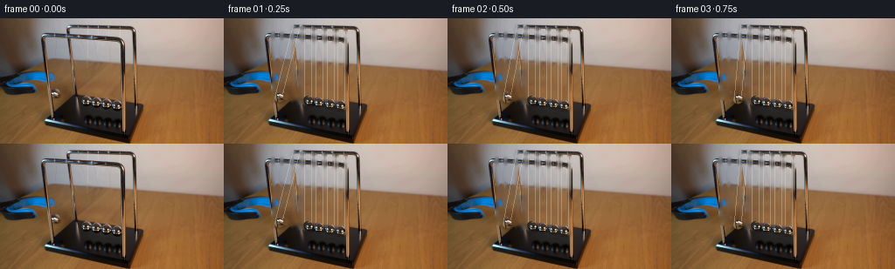
展开代码变化
--- 上一保存版本
+++ 本次保存版本
@@ -58,7 +58,7 @@
cv2.LINE_AA,
)
- return cv2.inpaint(image, mask, 5, cv2.INPAINT_TELEA)
+ return cv2.inpaint(image, mask, 3, cv2.INPAINT_NS)
def source_sprites(source, centers):
@@ -76,7 +76,7 @@
alpha = np.clip((5.9 - distance) / 1.1, 0.0, 1.0)
rgba = np.dstack((patch, alpha * 255.0)).astype(np.uint8)
sprites.append(
- (Image.fromarray(rgba, "RGBA"), (left, top))
+ (Image.fromarray(rgba), (left, top))
)
return sprites
候选 05播放与检查图

可观测工具轨迹
实际执行的命令与返回图片。
命令 1exit 0
/bin/bash -c "pwd && rg --files -g 'prompt.txt' -g 'GENERATION_RULES.md' -g '"'!node_modules'"' -g '"'!venv'"' | sort"
命令 2exit 0
/bin/bash -c "ls -la && find . -maxdepth 2 -type f | sort | sed -n '1,160p'"
命令 3exit 0
/bin/bash -c 'file first_frame.png && identify first_frame.png 2>/dev/null || true && git status --short'
命令 4exit 0
/bin/bash -c 'cat prompt.txt'
命令 5exit 0
/bin/bash -c 'cat GENERATION_RULES.md'
命令 6exit 0
/bin/bash -c "sed -n '1,240p' artifact_io.py"
命令 7exit 0
/bin/bash -c "sed -n '1,260p' player_template.html"
命令 8exit 0
/bin/bash -c "python - <<'PY'
from PIL import Image
im=Image.open('first_frame.png').convert('RGB')
print(im.size)
im.crop((40,0,200,144)).resize((640,576)).save('.tmp/scene_crop.png')
im.crop((85,55,170,115)).resize((680,480)).save('.tmp/balls_crop.png')
PY"命令 9exit 0
/bin/bash -c "python - <<'PY'
from PIL import Image, ImageDraw, ImageFont
im=Image.open('first_frame.png').convert('RGB').resize((1024,576),Image.Resampling.NEAREST)
d=ImageDraw.Draw(im)
for x in range(0,256,10):
X=x*4
d.line((X,0,X,576), fill=(255,0,255) if x%50==0 else (90,40,90), width=1)
if x%20==0:d.text((X+2,2),str(x),fill=(255,255,0))
for y in range(0,144,10):
Y=y*4
d.line((0,Y,1024,Y), fill=(255,0,255) if y%50==0 else (90,40,90), width=1)
if y%20==0:d.text((2,Y+2),str(y),fill=(255,255,0))
im.save('.tmp/grid.png')
PY"命令 10exit 0
/bin/bash -c "python - <<'PY'
from PIL import Image
im=Image.open('first_frame.png')
# useful patches
for name,box,scale in [
('ball_left',(45,73,73,97),12),('ball_rest',(92,82,146,104),8),('pivot',(40,0,158,75),5),('tool',(0,57,82,88),8),('base',(42,78,170,142),4)]:
c=im.crop(box); c.resize((c.width*scale,c.height*scale),Image.Resampling.NEAREST).save('.tmp/'+name+'.png')
PY"命令 11exit 0
/bin/bash -c "python - <<'PY' mods=['numpy','PIL','cv2','scipy','skimage','imageio','moviepy'] for m in mods: try: x=__import__(m); print(m, getattr(x,'__version__','ok')) except Exception as e: print(m,'NO',type(e).__name__) PY"
命令 12exit 0
/bin/bash -c "python - <<'PY'
import cv2, numpy as np
im=cv2.imread('first_frame.png')
g=cv2.cvtColor(im,cv2.COLOR_BGR2GRAY)
for p2 in [6,8,10,12,15]:
c=cv2.HoughCircles(g,cv2.HOUGH_GRADIENT,dp=1,minDist=6,param1=60,param2=p2,minRadius=3,maxRadius=9)
print('p2',p2, None if c is None else np.round(c[0],1).tolist())
PY"命令 13exit 0
/bin/bash -c "python - <<'PY'
from PIL import Image
im=Image.open('first_frame.png').convert('RGB')
# print horizontal bright/dark runs at selected rows
import numpy as np
a=np.array(im)
for y in [90,91,92,93,94,95,96,97,98,99,100,101,102]:
# regions non background near balls
vals=[]
for x in range(88,150):
r,g,b=a[y,x]
if max(r,g,b)-min(r,g,b)<30 and max(r,g,b)>70: vals.append(x)
# groups
groups=[]
for x in vals:
if not groups or x>groups[-1][-1]+1:groups.append([x])
else:groups[-1].append(x)
print(y,[(g[0],g[-1]) for g in groups if len(g)>=2])
PY"命令 14exit 0
/bin/bash -c "python - <<'PY'
from PIL import Image,ImageEnhance,ImageFilter
im=Image.open('first_frame.png').convert('RGB')
# nearest upscale plus enhanced contrast
c=im.crop((35,0,165,105)).resize((1040,840),Image.Resampling.LANCZOS)
c=ImageEnhance.Contrast(c).enhance(1.7)
c=ImageEnhance.Sharpness(c).enhance(2)
c.save('.tmp/strings_enhanced.png')
PY"命令 15exit 0
/bin/bash -c "python - <<'PY'
import cv2, numpy as np
im=cv2.imread('first_frame.png')
g=cv2.cvtColor(im,cv2.COLOR_BGR2GRAY)
for box in [(45,75,67,97),(92,86,112,107),(105,87,124,108),(118,88,136,109),(130,89,148,111)]:
x0,y0,x1,y1=box; roi=g[y0:y1,x0:x1]
for p2 in [4,5,6,7,8]:
c=cv2.HoughCircles(roi,cv2.HOUGH_GRADIENT,dp=1,minDist=20,param1=40,param2=p2,minRadius=4,maxRadius=9)
if c is not None: print(box,p2,np.round(c[0]+[x0,y0,0],1).tolist())
PY"命令 16exit 0
/bin/bash -c "python - <<'PY'
from PIL import Image,ImageEnhance
im=Image.open('first_frame.png').convert('RGB')
c=im.crop((88,82,148,110)).resize((1200,560),Image.Resampling.LANCZOS)
c=ImageEnhance.Contrast(c).enhance(1.5)
c=ImageEnhance.Sharpness(c).enhance(2)
c.save('.tmp/balls_hd.png')
PY"命令 17exit 0
/bin/bash -c "python - <<'PY'
import numpy as np
from PIL import Image
a=np.array(Image.open('first_frame.png').convert('RGB'))
# approximate ball center, classify silver pixels inside regions
for x0 in [92,104,116,128,140]:
print('\\nregion',x0)
for y in range(88,108):
s=''
for x in range(x0,x0+13):
r,g,b=a[y,x]; v=int(r)*.3+int(g)*.59+int(b)*.11
if v>180:s+='@'
elif v>130:s+='O'
elif v>85:s+='o'
elif v>50:s+='.'
else:s+=' '
print(f'{y:3}',s)
PY"命令 18exit 0
/bin/bash -c "python - <<'PY'
import numpy as np
from PIL import Image
a=np.array(Image.open('first_frame.png').convert('RGB')).astype(float)
# HSV-ish, find bright low saturation rows in cradle area excluding chrome frame
for y in range(80,108):
xs=[]
for x in range(85,145):
r,g,b=a[y,x]
if r>95 and abs(r-g)<25 and abs(g-b)<30 and r> b*0.95: xs.append(x)
groups=[]
for x in xs:
if not groups or x>groups[-1][-1]+1:groups.append([x])
else:groups[-1].append(x)
print(y,[(z[0],z[-1]) for z in groups if len(z)>=2])
PY"命令 19exit 0
/bin/bash -c "python - <<'PY'
import numpy as np
from PIL import Image
a=np.array(Image.open('first_frame.png').convert('RGB')).astype(float)
# sample strongest bright pixels in each 12 px x 12 px tile to infer centers
for x0 in range(90,146,12):
pts=[]
for y in range(87,108):
for x in range(x0,x0+12):
r,g,b=a[y,x]
if r>130 and abs(r-g)<15 and abs(g-b)<18:
pts.append((x,y,int(r)))
print(x0, pts[:15], 'n',len(pts), 'mean', np.mean([(p[0],p[1]) for p in pts],axis=0) if pts else '')
PY"命令 20exit 0
/bin/bash -c "python - <<'PY'
from PIL import Image
im=Image.open('first_frame.png').convert('RGB')
# overlay likely circle centers/radii on crop
from PIL import ImageDraw
c=im.crop((40,65,160,115)).resize((1200,500),Image.Resampling.LANCZOS)
d=ImageDraw.Draw(c)
for x,y in [(61.5,88.5),(96.5,94.5),(109.5,95.5),(121.5,98.5),(134,100)]:
d.ellipse(((x-40)*10-5,(y-65)*10-5,(x-40)*10+5,(y-65)*10+5),outline=(255,0,0),width=3)
c.save('.tmp/circles_overlay.png')
PY"命令 21exit 1
/bin/bash -c 'python generate.py'
命令 22exit 0
/bin/bash -c 'python generate.py'
命令 23exit 0
/bin/bash -c "python - <<'PY'
from PIL import Image,ImageDraw
ims=[]
for i in [0,1,2,3,4,5,6,7,8,9,10,11,12,13,14,15,16,17,18,19]:
im=Image.open(f'frames/{i:02d}.png').resize((512,288),Image.Resampling.NEAREST)
d=ImageDraw.Draw(im); d.rectangle((0,0,75,19),fill=(0,0,0)); d.text((3,3),f'{i:02d} {i/4:.2f}s',fill=(255,255,255))
ims.append(im)
out=Image.new('RGB',(512*4,288*5),(20,20,20))
for i,im in enumerate(ims):out.paste(im,((i%4)*512,(i//4)*288))
out.save('.tmp/all_frames.png')
PY"命令 24exit 0
/bin/bash -c "python - <<'PY'
from PIL import Image
im=Image.open('first_frame.png')
for name,box in [('rightball',(126,92,143,109)),('midball',(102,86,118,103)),('leftball',(53,80,70,97))]:
c=im.crop(box).resize(((box[2]-box[0])*30,(box[3]-box[1])*30),Image.Resampling.NEAREST)
c.save('.tmp/'+name+'_exact.png')
PY"命令 25exit 0
/bin/bash -c "python - <<'PY'
import numpy as np
from PIL import Image
a=np.array(Image.open('first_frame.png').convert('RGB')).astype(int)
for y in range(90,105):
print('y',y)
print(' '.join(f'{x}:{a[y,x,0]:03},{a[y,x,1]:03},{a[y,x,2]:03}' for x in range(127,141)))
PY"命令 26exit 0
/bin/bash -c "python - <<'PY'
from PIL import Image, ImageChops
import numpy as np
# Compare generated frame 1 with clean-like frame and inspect ball texture via crops.
for i in [1,4,7,10,13,16,19]:
im=Image.open(f'frames/{i:02d}.png')
im.crop((78,84,142,108)).resize((640,240),Image.Resampling.NEAREST).save(f'.tmp/f{i:02d}_balls.png')
PY"命令 27exit 0
/bin/bash -c "python - <<'PY' import generate, numpy as np s=generate.simulate() for i,t in enumerate(s): c=np.column_stack((generate.REST_X+generate.LENGTH*np.sin(t),generate.PIVOT_Y+generate.LENGTH*np.cos(t))) print(i,np.round(np.rad2deg(t),2),np.round(c[:,0],2)) PY"
命令 28exit 0
/bin/bash -c "python - <<'PY'
import cv2, numpy as np, generate
from PIL import Image
b=generate.build_background(cv2.imread('first_frame.png'))
cv2.imwrite('.tmp/clean_bg.png',b)
PY"命令 29exit 0
/bin/bash -c "python - <<'PY'
from PIL import Image
im=Image.open('first_frame.png')
for box,name in [((103,89,117,103),'s109'),((90,88,103,101),'s96'),((128,94,141,107),'s134'),((55,83,68,96),'s61')]:
c=im.crop(box).resize(((box[2]-box[0])*30,(box[3]-box[1])*30),Image.Resampling.NEAREST)
c.save('.tmp/'+name+'.png')
PY"命令 30exit 0
/bin/bash -c "python generate.py && python - <<'PY' import generate, numpy as np s=generate.simulate() for i,t in enumerate(s): c=np.column_stack((generate.REST_X+generate.LENGTH*np.sin(t),generate.PIVOT_Y+generate.LENGTH*np.cos(t))) print(i,np.round(np.rad2deg(t),2),np.round(c[:,0],2)) PY"
命令 31exit 0
/bin/bash -c "python - <<'PY'
from PIL import Image,ImageDraw
ims=[]
for i in range(20):
im=Image.open(f'frames/{i:02d}.png').resize((512,288),Image.Resampling.NEAREST)
d=ImageDraw.Draw(im); d.rectangle((0,0,75,19),fill=(0,0,0)); d.text((3,3),f'{i:02d} {i/4:.2f}s',fill=(255,255,255)); ims.append(im)
out=Image.new('RGB',(512*4,288*5),(20,20,20))
for i,im in enumerate(ims):out.paste(im,((i%4)*512,(i//4)*288))
out.save('.tmp/all_frames2.png')
PY"命令 32exit 0
/bin/bash -c "python - <<'PY'
from PIL import Image
for i in [0,1,4,5,6,7,8,12,13,14,19]:
im=Image.open(f'frames/{i:02d}.png').crop((45,75,165,112))
im.resize((1200,370),Image.Resampling.NEAREST).save(f'.tmp/seq_{i:02d}.png')
PY"命令 33exit 0
/bin/bash -c "python - <<'PY'
from PIL import Image,ImageDraw,ImageFont
# Compare original 0 and generated at frames and inspect metadata / pixel identity.
import numpy as np
orig=np.asarray(Image.open('first_frame.png').convert('RGB'))
for i in [0,1,5,8,12,19]:
a=np.asarray(Image.open(f'frames/{i:02d}.png').convert('RGB'))
print(i,'exact0',np.array_equal(a,orig) if i==0 else '-', 'mean',a.mean(axis=(0,1)).round(2),'range',a.min(),a.max())
PY"命令 34exit 0
/bin/bash -c "python - <<'PY'
import cv2, numpy as np
im=cv2.imread('frames/08.png')
for name,roi in [('left',(40,65,95,110)),('right',(120,85,165,115)),('strings',(40,0,150,90))]:
x0,y0,x1,y1=roi;c=im[y0:y1,x0:x1]; cv2.imwrite(f'.tmp/check_{name}.png',cv2.resize(c,None,fx=8,fy=8,interpolation=cv2.INTER_NEAREST))
PY"命令 35exit 0
/bin/bash -c "python - <<'PY'
from PIL import Image
im=Image.open('first_frame.png').convert('RGB')
im.crop((40,65,165,115)).resize((1000,400),Image.Resampling.NEAREST).save('.tmp/ballband_orig.png')
PY"命令 36exit 1
/bin/bash -c "python - <<'PY'
import json
p=json.load(open('task_spec.json'))
print(p)
PY"命令 37exit 0
/bin/bash -c "python -m py_compile generate.py && python generate.py && python - <<'PY'
from pathlib import Path
import numpy as np
from PIL import Image
orig = np.asarray(Image.open('first_frame.png').convert('RGB'))
frames = np.stack([np.asarray(Image.open(f'frames/{i:02d}.png').convert('RGB')) for i in range(20)])
z = np.load('pixels.npz')['pixels']
assert frames.shape == (20,144,256,3), frames.shape
assert np.array_equal(frames[0], orig), 'frame 0 differs'
assert z.shape == (144,256,20), z.shape
assert (z[...,0].astype(np.uint32) << 16 | z[...,1].astype(np.uint32) << 8 | z[...,2].astype(np.uint32)).shape == (144,256)
print('frames', frames.shape, 'dtype', frames.dtype)
print('frame0_exact', np.array_equal(frames[0], orig))
print('changed_pixels_by_frame', [int(np.any(frames[i] "'!= frames[0], axis=2).sum()) for i in range(20)])
print('"'outputs', [p.name for p in sorted(Path('.').glob('*')) if p.is_file()])
PY"命令 38exit 0
/bin/bash -c "python - <<'PY'
import cv2, numpy as np
from PIL import Image
im=cv2.imread('first_frame.png')
mask=np.zeros((144,256),np.uint8)
centers=[(61.4,89.0),(96.5,94.3),(109.5,95.8),(121.5,97.5),(134,99)]
for cx,cy in centers: cv2.ellipse(mask,(round(cx),round(cy)),(7,7),0,0,360,255,-1)
for cx,cy in centers:
top_y=7.5+(cx-61.4)*.095
for off in (-4,4):
cv2.line(mask,(round(cx+off),round(cy-4.5)),(round(cx+off),round(top_y+1)),255,2,cv2.LINE_AA)
outs=[]
for method,r in [(cv2.INPAINT_TELEA,3),(cv2.INPAINT_TELEA,7),(cv2.INPAINT_NS,3),(cv2.INPAINT_NS,5),(cv2.INPAINT_NS,7)]:
out=cv2.inpaint(im,mask,r,method)
cv2.imwrite(f'.tmp/bg_{method}_{r}.png',out)
crop=out[72:112,45:165]
outs.append(cv2.resize(crop,None,fx=6,fy=6,interpolation=cv2.INTER_NEAREST))
cv2.imwrite('.tmp/bg_variants.png',np.vstack(outs))
PY"命令 39exit 0
/bin/bash -c "python - <<'PY'
from pathlib import Path
import json,re
s=Path('index.html').read_text()
m=re.search(r'const DATA=(\\{.*?\\}),W=',s)
print('html_bytes',len(s),'data_present',bool(m))
if m:
d=json.loads(m.group(1)); print('frames',d['frames'],'size',d['width'],d['height'],'fps',d['fps'],'deltas',len(d['deltas']))
PY
node --check <(python - <<'PY'
from pathlib import Path
import re
s=Path('index.html').read_text()
print(re.search(r\"<script>(.*)</script>\",s,re.S).group(1))
PY
) 2>/dev/null || true"命令 40exit 0
/bin/bash -c "python generate.py && python - <<'PY'
import numpy as np
from PIL import Image
orig=np.asarray(Image.open('first_frame.png').convert('RGB'))
frames=np.stack([np.asarray(Image.open(f'frames/{i:02d}.png').convert('RGB')) for i in range(20)])
assert frames.shape==(20,144,256,3) and frames.dtype==np.uint8
assert np.array_equal(frames[0],orig)
assert np.isfinite(frames).all()
print('OK shape=',frames.shape,'frame0_exact=',np.array_equal(frames[0],orig),'mean_delta_last=',float(np.abs(frames[-1].astype(int)-frames[0]).mean()))
PY"命令 41exit 0
/bin/bash -c "python - <<'PY'
import numpy as np
from PIL import Image
im=np.asarray(Image.open('first_frame.png').convert('RGB')).astype(float)
# test likely circle centers by radial edge contrast and dark rim radius
for cx,cy in [(61.5,89),(96.5,94.5),(109.5,95.5),(121.5,98.5),(134,100)]:
vals=[]
for r in np.arange(3.5,9.1,.5):
ang=np.linspace(0,2*np.pi,90,endpoint=False)
x=np.clip(np.rint(cx+r*np.cos(ang)).astype(int),0,255); y=np.clip(np.rint(cy+r*np.sin(ang)).astype(int),0,143)
v=im[y,x].mean(axis=1)
vals.append((r,round(v.mean(),1),round(v.std(),1)))
print((cx,cy),vals)
PY"命令 42exit 0
/bin/bash -c "python - <<'PY' import generate, numpy as np s=generate.simulate() # report maximum overlap/gap and speed after each frame for i,t in enumerate(s): x=generate.REST_X+generate.LENGTH*np.sin(t) print(i, 'x=',np.round(x,1),'gaps=',np.round(np.diff(x),1),'theta=',np.round(np.rad2deg(t),1)) PY"
视觉工具实际返回图片 1
视觉工具实际返回图片 2
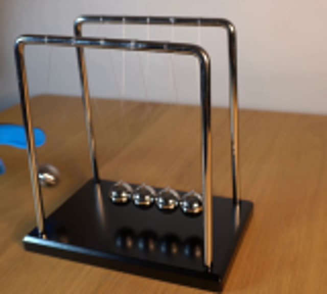
视觉工具实际返回图片 3
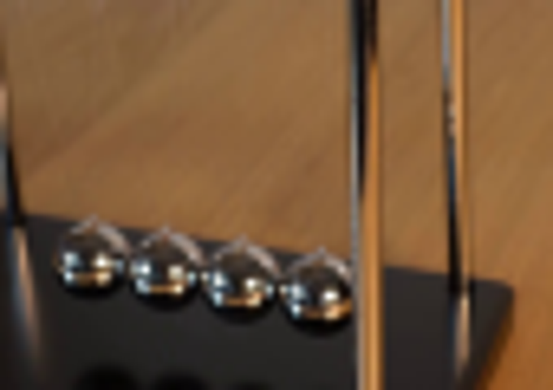
视觉工具实际返回图片 4
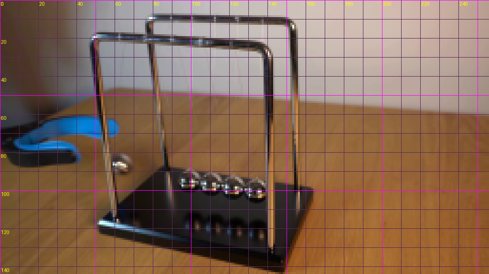
视觉工具实际返回图片 5
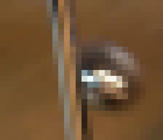
视觉工具实际返回图片 6
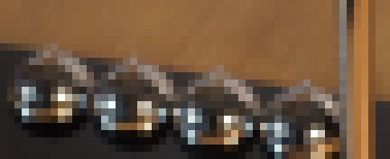
视觉工具实际返回图片 7
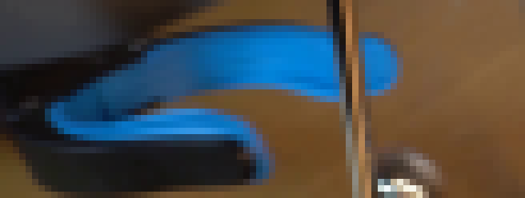
视觉工具实际返回图片 8
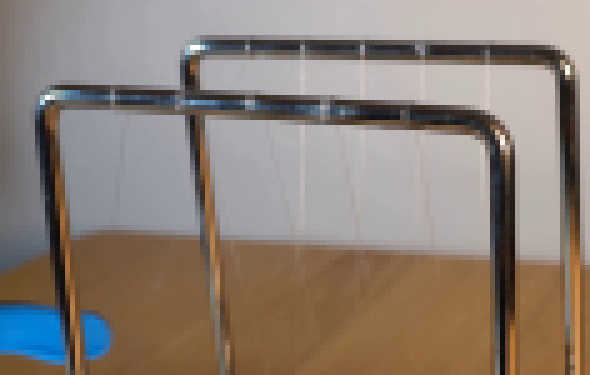
视觉工具实际返回图片 9
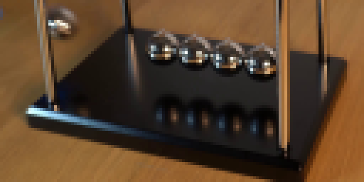
视觉工具实际返回图片 10
视觉工具实际返回图片 11
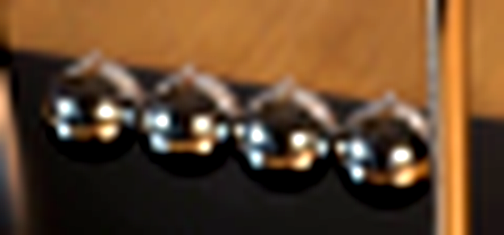
视觉工具实际返回图片 12
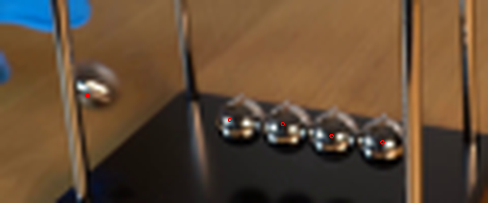
视觉工具实际返回图片 13
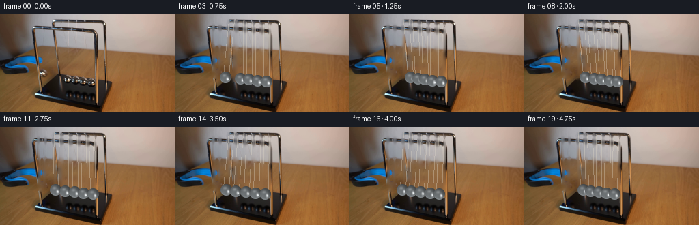
视觉工具实际返回图片 14
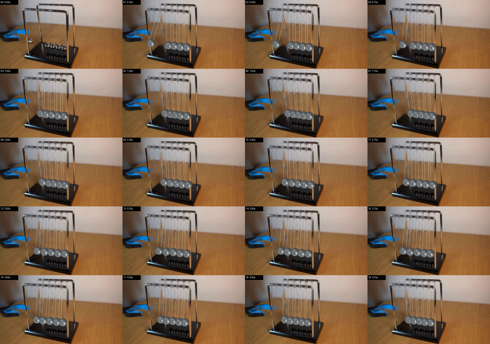
视觉工具实际返回图片 15
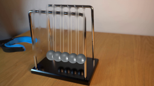
视觉工具实际返回图片 16
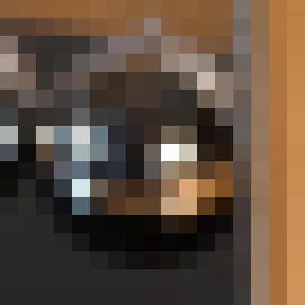
视觉工具实际返回图片 17
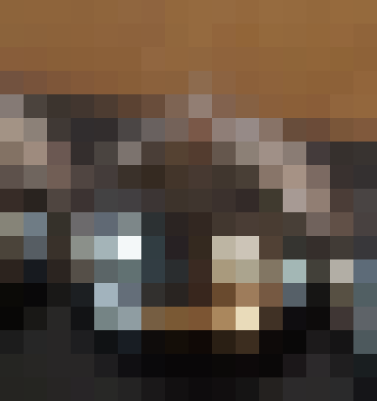
视觉工具实际返回图片 18
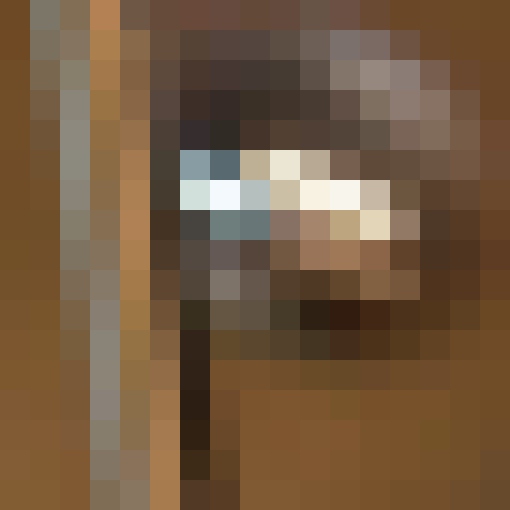
视觉工具实际返回图片 19
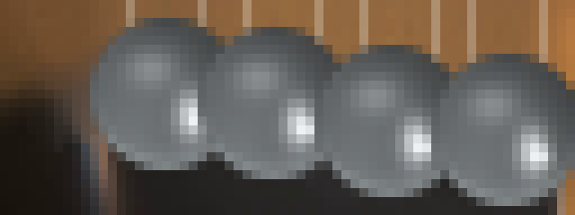
视觉工具实际返回图片 20
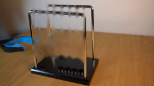
视觉工具实际返回图片 21
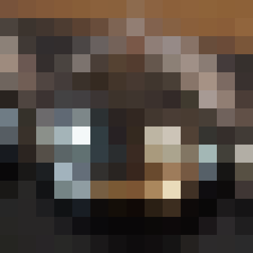
视觉工具实际返回图片 22
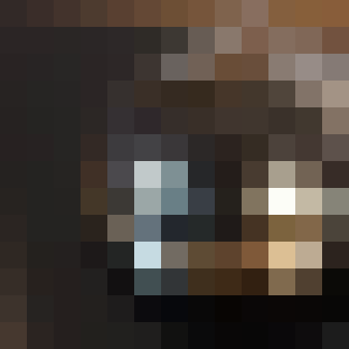
视觉工具实际返回图片 23
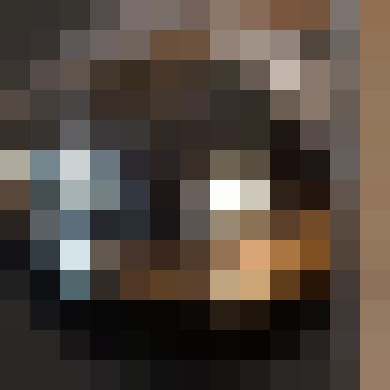
视觉工具实际返回图片 24
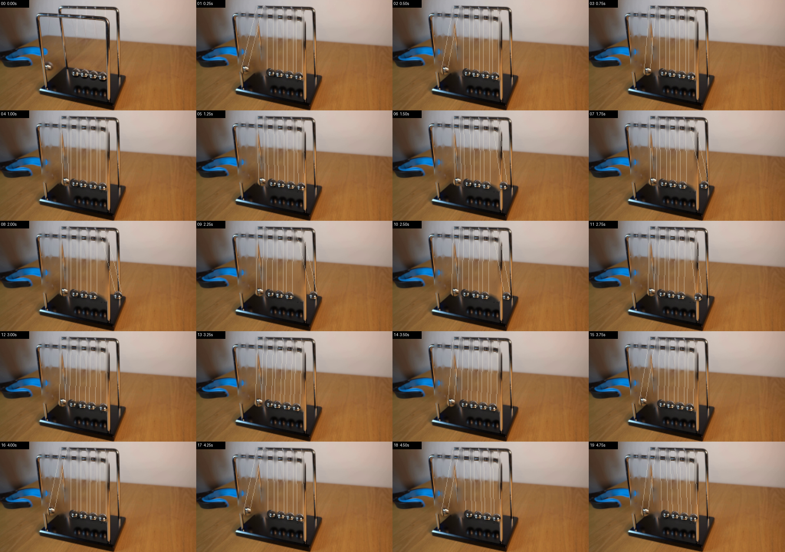
视觉工具实际返回图片 25
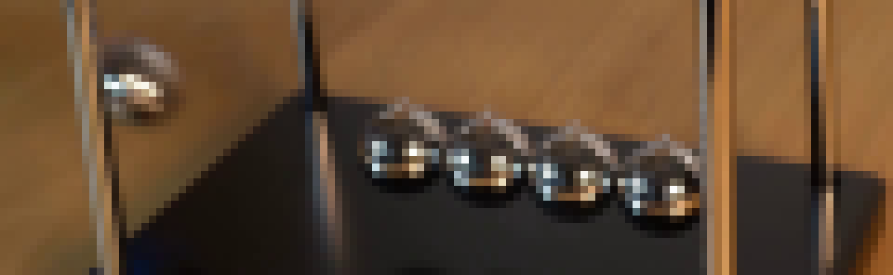
视觉工具实际返回图片 26
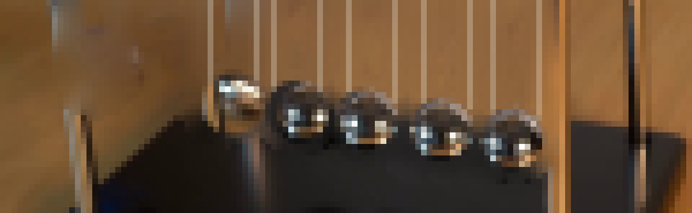
视觉工具实际返回图片 27
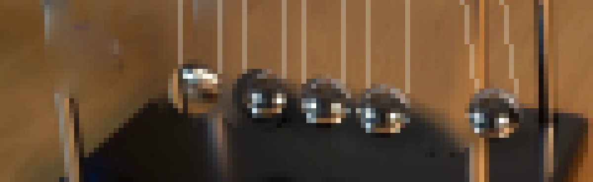
视觉工具实际返回图片 28
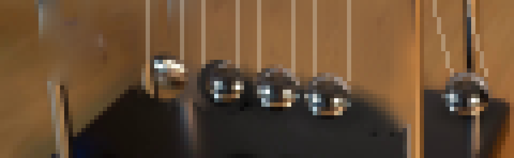
视觉工具实际返回图片 29
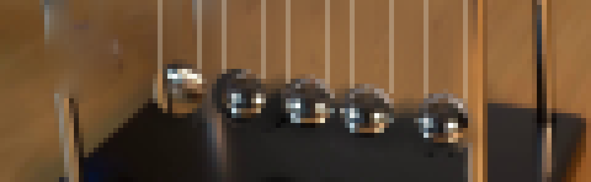
视觉工具实际返回图片 30
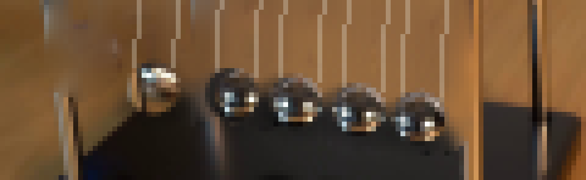
视觉工具实际返回图片 31
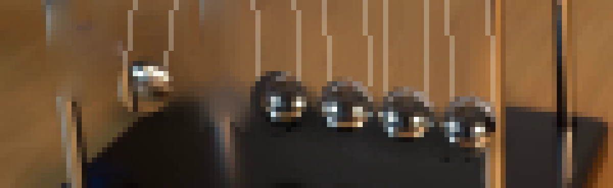
视觉工具实际返回图片 32
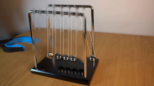
视觉工具实际返回图片 33
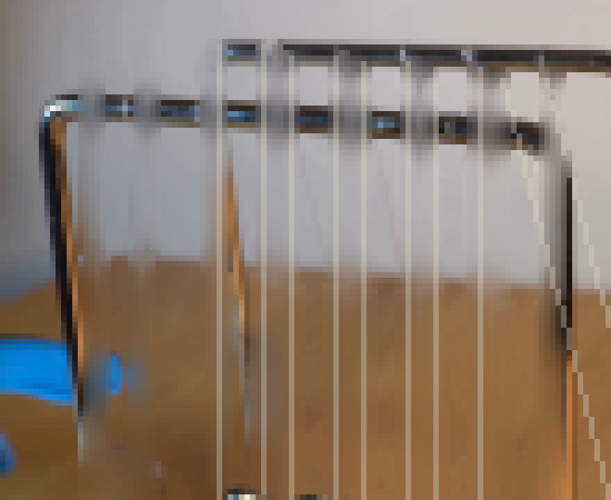
视觉工具实际返回图片 34
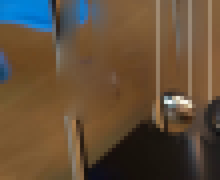
视觉工具实际返回图片 35
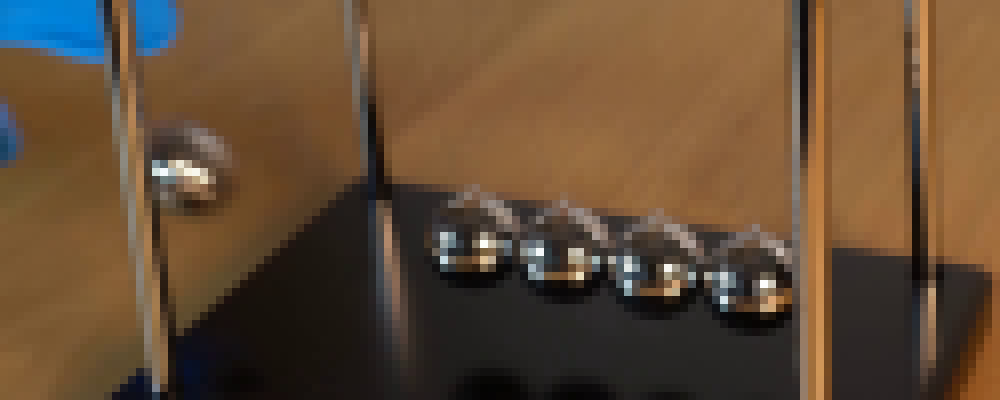
视觉工具实际返回图片 36
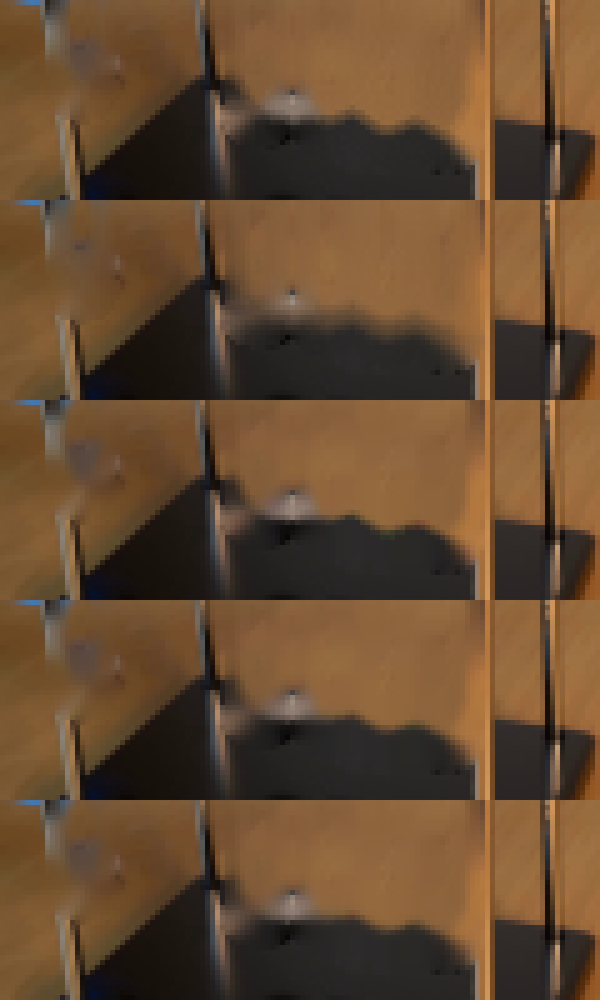
视觉工具实际返回图片 37
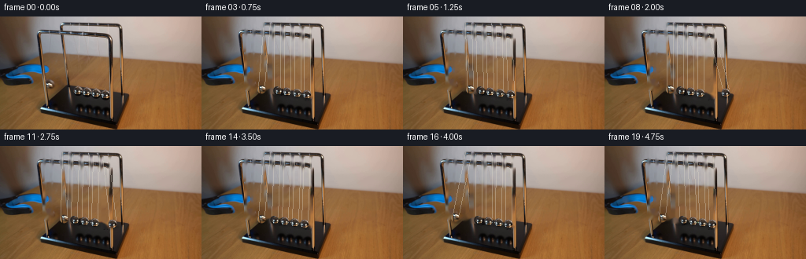
保存候选 5 份；完成命令 42 次；可验证图片返回 37 张。原始 API 响应与完整日志保留在本地。